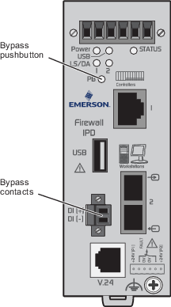

Bypassing the firewall IPD
In order to send an unlock command to a logic solver such as a CSLS or SLS 1508, you must first bypass the firewall IPD. You can use either the front-panel pushbutton or a set of discrete input contacts on the front panel to bypass the firewall IPD. This topic explains how to use the front-panel pushbutton to bypass the firewall IPD. Refer to KBA NK-1600-0290 for information on using the discrete input contacts.
